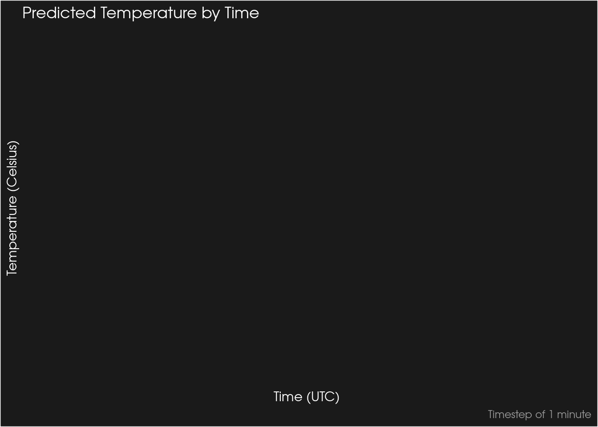

The {RClimacell} R Package
Nik ![]()
I’m pleased to announce the {RClimacell} package (granted it’s been out on CRAN for a few weeks now). This pacakge is exceptionally useful in retrieving weather data using the Climacell API. If you haven’t heard of Climacell, it’s a company out of Boston focused on hyper-local weather forecasting. Ever since the DarkSky API has shut down, many other companies have started to fill the void. One of the most attractive aspects of DarkSky was its “pay-as-you-go” pricing, which was really cool as you could use it as much as you want (within the limitations) and not have any recurring subscription fees (which I really disdain).
Climacell isn’t necessarily the most friendly towards developers, in my opinion. Over the last few weeks, I’ve seen their pricing become a bit more stingy and not very friendly. For example, in late 2020, they offered up to 1000 API calls per day, now it’s around 500. While that sounds great, it’s also hampered by the fact that you can only make 25 calls per hour. Debugging erroneous code is not fun if you hit that threshold. But I digress.
I think the package website is really good at highlighting what can be done with this package. The key limitation is that it only leverages the Timelines Interface from Climacell as its the only way to get most of the data for free.
Since the package makes extensive use the tidyverse lingo, it’s quite fun to use as well!
library(ggplot2)
library(dplyr)
library(extrafont)
df_temp %>%
select(start_time, temp_c, temp_feel_c) %>%
tidyr::pivot_longer(cols = temp_c:temp_feel_c) %>%
ggplot(aes(x = start_time, y = value, color = name)) +
geom_line() +
labs(x = 'Time (UTC)',
y = 'Temperature (Celsius)',
color = 'Type',
title = "Predicted Temperature by Time",
caption = 'Timestep of 1 minute'
) +
scale_color_discrete(labels = c('Predicted Temperature','Feels Like Temperature')) +
theme(plot.title = element_text(family = "Bahnschrift", color = 'grey100'),
plot.caption = element_text(family = "Bahnschrift", color = 'grey60'),
axis.title = element_text(family = 'Bahnschrift', color = 'grey100'),
axis.text.x = element_text(family = "Bahnschrift", color = 'grey70'),
axis.text.y = element_text(family = "Bahnschrift", color = 'grey70'),
plot.background = element_rect(fill = 'grey10'),
panel.background = element_blank(),
panel.grid.major = element_line(color = 'grey30', size = 0.2),
panel.grid.minor = element_line(color = 'grey30', size = 0.2),
legend.background = element_rect(fill = 'grey20'),
legend.key = element_blank(),
legend.title = element_text(family = 'Bahnschrift', color = 'grey80'),
legend.text = element_text(family = "Bahnschrift", color = 'grey90'),
legend.position = c(0.87, 0.2)
)